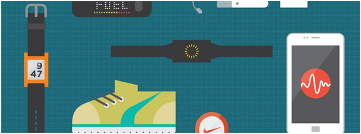
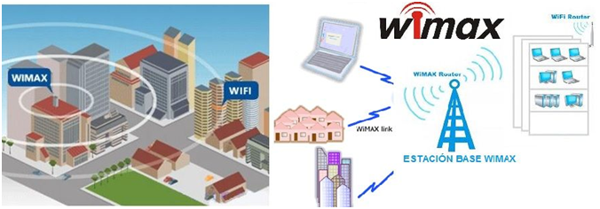
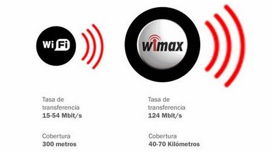
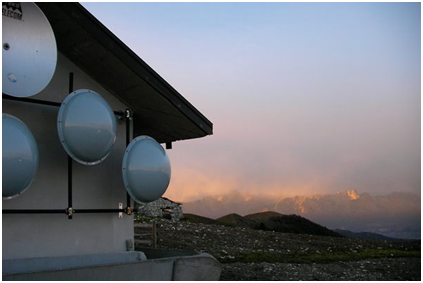
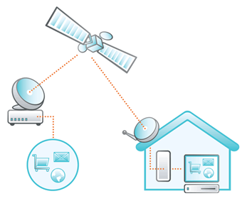

TIPOS DE REDES
INTERNET DE LAS COSAS (IoT)
El IoT es el mundo en el que cada objeto tiene una identidad virtual propia y capacidad potencial para integrarse e interactuar de manera independiente en la Red con cualquier otro individuo, ya sea una maquina o un humano, es decir, se refiere a escenarios en los que la conectividad de red y capacidad de computo se extiende a articulos de uso diario que habitualmente no se consideran computadores, permitiendo asi que estos dispositivos, generen, intercambien y consuman datos con una minima intervencion humana.
Actualmente se estan combinando productos de consumo, bienes, automoviles, componentes industriales, servicios publicos, sensores, y demas objetos de uso cotidiano con conectividad a Internet y potentes capacidades de analisis de datos que prometen transformar el modo en que trabajamos y vivimos.
Estas tendencias del mercado tecnológico incluyen la conectividad omnipresente, la adopción generalizada de redes basadas en el protocolo IP, la economía en la capacidad de cómputo, la miniaturización, los avances en el análisis de datos y el surgimiento de la computación en la nube.
Las implementaciones de la IoT hacen uso de distintos modelos de conectividad, los cuales destacan la flexibilidad en las formas en los que los dispositivos de la IoT pueden conectarse:
• Device-to-Device (dispositivo a dispositivo)
• Device-to-cloud (dispositivo a la nube)
• Device-to-Gateway (Dispositivo a puerta de enlace)
• Back-End Data-Sharing (Intercambio de datos a través del back-end)
Ejemplos de uso:
• Smart Home: Convertir una casa en inteligente es probablemente la aplicación IoT de éxito más popular en este momento. Es más asequible y accesible para los consumidores. Desde el Amazon Echo, Google Home hasta el nuevo Apple HomePod, hay cientos de Apps en el mercado que se pueden controlar con estos dispositivos, utilizando tan sólo la voz de los usuarios, haciendo sus vidas más conectadas que nunca.
• Smart Cities: El IoT tiene el potencial de transformar ciudades enteras resolviendo problemas reales a los que los ciudadanos enfrentan cada día. Con el uso de sensores y datos adecuados, podemos resolver problemas de congestión del tráfico, delincuencia y contaminación.
• Smart Agriculture: Los agricultores están comenzando a implementar tecnología de riego que combina aspersores inteligentes y repositorios de datos sobre los cultivos y las condiciones del suelo. Aprovechan la información meteorológica para determinar la fecha y método de plantación de semillas. También les ayuda a tomar decisiones sobre el uso de herbicidas en un determinado terreno. La información meteorológica y de la calidad del suelo puede ayudar a determinar la cantidad perfecta de agua en cosechas, evitando el error de regar justo antes de la lluvia.
• Coches conectados: Estos vehículos están equipados con acceso a Internet y de sensores de movimiento, proximidad y cámaras. Permiten no sólo poder realizar una conducción autónoma, también dar soporte al conductor si se necesita una reparación. El software que llevan instalados los coches de Tesla permite programar de forma autónoma un sistema de recogida del vehículo y llevarlo a una instalación de Tesla para realizar los ajustes necesarios en su mantenimiento.
• Retail: Una aplicación en Internet de las Cosas (IoT) que aparece para resolver el problema de autenticación, localización y pago en comercios, son los Beacons, pequeños sensores con tecnología bluetooth que se comunican con dispositivos inteligentes tales como smartphones, tablets, o smartwatches, entre otros. Facilitan la localización en interiores y aportan información de ofertas o tiendas a los usuarios.
• Wearables: Relojes, pulseras y gafas inteligentes nos ofrecen nuevas oportunidades de interactuar con nuestro entorno. Nos permiten conocernos mejor, por ejemplo midiendo nuestras biométricas para incrementar nuestro rendimiento deportivo o salud. Y por otro lado, nos dotan de capacidades, como poder ver en smart glasses información sobre nuestro entorno en Realidad Aumentada.
• Sector industrial y manufacturero: La incorporación de sensores IoT, inteligencia artificial y wearables permiten una disminución significativa de tiempos de proceso, mejora en la seguridad de empleados y desplazamiento en la resolución de incidencias. Así se obtiene una disminución de costes y, por lo tanto, un notable aumento en sus beneficios a medio y largo plazo.
La implementación de dispositivos de la IoT promete transformar muchos aspectos de la forma en que vivimos. Los nuevos productos de la IoT (electrodomésticos, componentes de automatización del hogar y dispositivos de gestión e energía con conexión a Internet) nos llevan hacia una idea de la “casa inteligente” que ofrece beneficios tales como la seguridad y eficiencia energética. Dispositivos personales de la IoT (dispositivos portátiles para gestionar y monitorear la actividad física y los dispositivos médicos con conexión a Internet) están transformando la forma en que se ofrecen los servicios de salud. Los sistemas de la IoT como los vehículos conectados en red, los sistemas de tráfico inteligente y los sensores integrados en carreteras y puentes nos acerca más a la visión de “ciudades inteligentes”, que ayudan a minimizar la congestión y el consumo de energía. La tecnología IoT ofrece la posibilidad de transformar la agricultura, la industria y la producción de energía mediante el aumento de la disponibilidad de información a lo largo de la producción por medio de sensores conectados en red.
¿QuUE ES WEARABLE?
Son un conjunto de dispositivos electrónicos que se incorporan en alguna parte del cuerpo humano interactuando de forma continua con el usuario y con otros dispositivos, con el fin de realizar una determinada función, dispositivos tales como relojes inteligentes o smartwatchs, zapatos de deportes con GPS incorporado y pulseras que controlan nuestro estado de salud, entre otros, se hallan cada vez más presentes en nuestras vidas cotidianas.
La tecnología wearable hace referencia a los productos que incorporan un microprocesador y que usamos a diario. Se halla presente en un extenso abanico de campos que satisfacen nuestras necesidades, con el fin de mejorar nuestra calidad de vida estando muy presente en la salud, seguridad de trabajadores, adiestramiento de deportistas, etc.
Estos son algunos de los dispositivos wearable:
• Gafas inteligentes: Google Glass, las primeras lentes inteligentes de la compañía Google, que son controladas a través de instrucciones pronunciadas con la voz del usuario disponiendo de una pequeña pantalla donde se muestra la información solicitada. Con estas gafas se pueden hacer fotografías y grabar videos con alta definición de lo que se está viendo y reproducirlo en otro instante, se pueden hacer consultas al correo electrónico, el tráfico, noticias, rutas, traducciones, etc.

• Accesorios y complementos: Relojes, anillos y pulseras que se enciende al identificar la huella digital del usuario, estos dispositivos guardan todo la información sobre su modo de vida, como los kilómetros que recorre a diario, el ritmo cardiaco, los ciclos de sueño, etc. Asimismo interactuar con otros dispositivos electrónicos que estén a la merced de la tecnología inalámbrica de estos wearables, logrando abrir puertas del hogar, encender el motor del coche, cargar y descargar todo tipo de ficheros, etc.
• Seguridad de los trabajadores: Como los cascos de bomberos que regulan los niveles de oxígeno y la temperatura que puede resistir el bombero en los trabajos de extinción de los incendios, además llevan incorporados un localizador GPS que deja conocer en cualquier instante su ubicación.
RED INALAMBRICA PARA ZONAS RURALES
Para hablar de este tipo de redes WIFI que abarcan grandes distancias comenzaremos con un breve contexto del WIMAX.
El WIMAX que es un tipo de tecnología con alcances superiores a los 30km y velocidades de hasta 124Mbps, las redes WIFI mas rapidas conocidas en la actualidad son de aproximadamente 54Mbps con una cobertura máxima de unos 300 metros.
 
Como nos hace referencia la imagen 2, el WIMAX tiene un alcance considerablemente amplio, por lo que es una opción para establecer conexiones inalámbricas en zonas rurales, para este tipo de conexiones de gran cobertura, también existen otras tecnologías y se conocen proyectos de grandes coberturas.
La tecnología WIFI 5G es usada en algunas partes del mundo para proveer conexión WIFI, esta al igual que el WIMAX utiliza antenas en puntos estratégicos para fortalecer la cobertura y estas ondas son diferentes a las del WIFI tradicional (5GHz y 2,4GHz) con una potencia mayor según el estándar 802.11ª en lugar del 802.11 b o g.

Para el Internet Satelital se debe instalar una antena parabólica en casa, esta envía y reciben nuestros mails y webs a través de los satélites que sobrevuelan nuestro planeta, este tipo de tecnología no es tan económica, pero es una opción más para los que no tienen otra manera de poder conectarse.

Algunas de las ventajas o beneficios de la conexión a internet vía satélite. Se podrían enumerar como lo ha hecho Technected.com:
- Conexión permanente: A pesar de que la mayoría de usuarios de internet ya superó la etapa de conexión a internet por dial-up y no necesita “encender” el internet, con la conexión satelital los equipos están siempre conectados, y la velocidad es independiente de los problemas que puedan presentarse en la línea telefónica o el cableado con conexiones DSL.
- Facil de usar: La instalación es simple: requiere la creación de una cuenta de usuario y la instalación de una antena parabólica fuera del hogar o lugar en el que se va a usar.
- Cubrimiento global: Debido a la señal satelital emitida en una órbita geoestacionaria, la señal puede llegar a casi cualquier lugar del mundo. Variaciones geográficas u obstáculos creados por el hombre es lo que en muchas ocasiones hace difícil las comunicaciones. No sucede de esta manera con la conexión satelital, emitida desde el espacio por medio de diferentes frecuencias.
- Velocidad: En general, la velocidad de descarga con internet satelital puede llegar a ser nueve veces superior a la que se puede conseguir con conexión de dial-up, y no está sujeta a la saturación del canal como en las ciudades.
- Uso de múltiples equipos:Con internet dial-up o incluso con conexión ADSL, es necesario tomar turnos en el computador familiar, y tener una instalación para la señal inalámbrica o wi-fi. El acceso a internet por medio satelital también requiere un computador central, pero también permite el acceso a múltiples equipos de diferentes características, según la necesidad del usuario.
Recuperado de: (http://sky.net.co/ventajas-internet-satelital/)